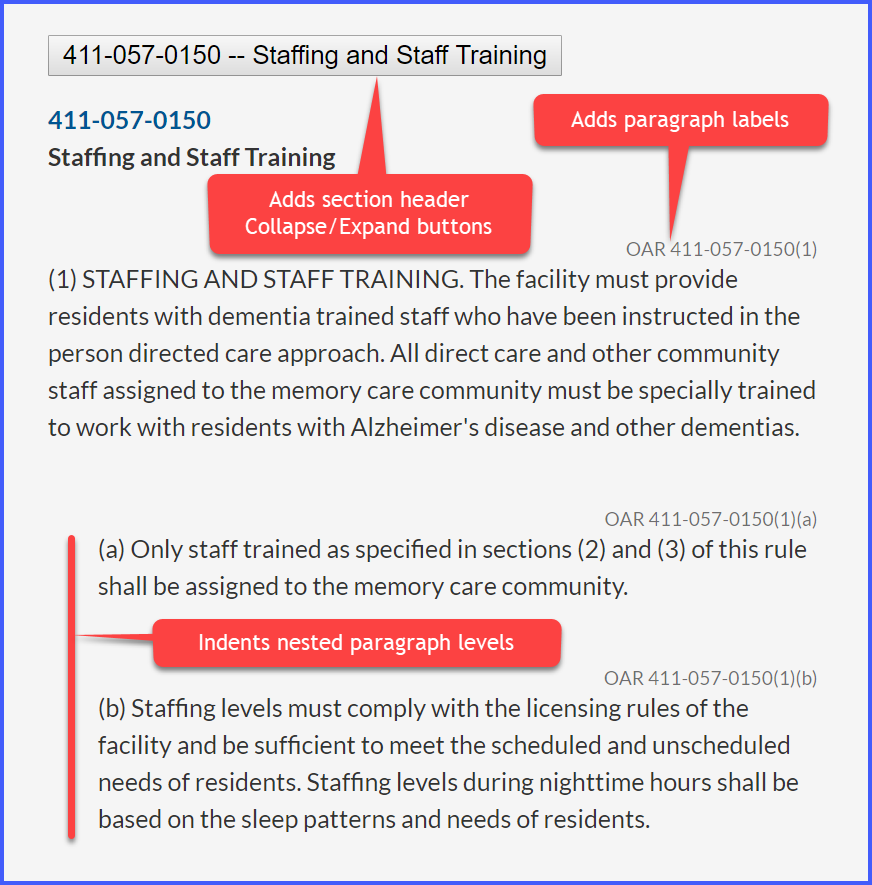

This bookmarklet fixes up Oregon Administrative Rules
(OAR) web pages by:
- Adding section-header collapse-and-expand toggle buttons (but not typically when is only one section on the page)
- Indenting paragraphs proportional to their nesting levels
- Adding paragraph identifiers
To use:
- Drag this
OAR Page Helper
link to your web-browser's Bookmarks Bar to create a bookmark
- Now browse to an OAR webpage such as one the following pages (where this bookmarklet has been tested as of
10-April-2019)
- Then, click on the OAR Page Helper bookmark to fix up the page
There are a few indentation bugs on some pages where roman numerals are concerned. Nevertheless, it's mostly correct and the presentation is still a quite helpful.
The source code for this bookmarklet is here.
